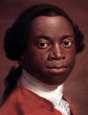

|

|

|
|
|
Born Olaudah Equiano, the son of an East Nigerian tribal chief, probably
near Onitsha, he enjoyed a childhood filled with a sense of tribal
unity, made particularly happy by his keen memory and understanding.
This idyll ended when he was about ten years of age and kidnapped by
nearby tribesmen. He passed through several hands and experiences before
being brought to white slave traders on the coast. Equiano observed a
brutality toward slaves which made him despair during the voyage to the
West Indies. He was taken then to Virginia, however, where he was
purchased by a lieutenant in the Royal Navy, Michael Henry Pascal, and
transported to England, a turn of fortune which began his education and
new adventures. Pascal named him for the sixteenth-century Swedish king
Gustavus Vasa. While yet on ship Vassa began to learn English, thanks to
the kindness of Richard Baker, a young sailor whose death he later
mourned. Following his master, he spent a number of years on ship and in
ports during which he saw fighting between the British and the French in
the Mediterranean and in Canada, where he witnessed the siege of
Louisburgh. Meanwhile Pascal's visits to London had made Vassa a
favorite of the Misses Guerin, sisters of a friend of Pascal's. They
helped Vassa advance his education, and had him baptized in St.
Margaret's Church, Westminster, in February 1759.
That summer he was present at a sea battle between the British and
French in the Mediterranean, and performed service before and after the
event. He was a steward on a number of ships, including the Aetna
in 1761. Vassa had been promised freedom, and more than earned it; but
when he asked for it in England late in 1762, Pascal was angered and
sent him to the West Indies to be sold. Good fortune gave Vassa as a new
master Robert King, a Philadelphia Quaker and merchant from whom he
learned commercial arts and whom he served responsibly in return,
traveling between Philadelphia and the West Indies. Although Quakers had
discarded slavery within their sect in 1761, King required Vassa to buy
his freedom through money earned. Vassa did so by patient trading during
voyages in the Caribbean and on the Georgia coast. In 1766 he attained
his wish, acquiring his freedom papers. Cruising the islands, collecting
rum, sugar, and other goods, Vassa saw that, as limiting as were the
terms of his servitude to King, numerous slaves suffered more onerous
employment and masters who ranged from inhumane to inhuman. Vassa's
dream of abolition was thus aroused and contributed to the inspiration
which later produced his autobiography, Interesting Narrative.
His journeys from Philadelphia to the Caribbean were replete with
adventures. He learned navigation, paying the mate of his vessel for the
privilege; Vassa had it in mind that should King prove recreant to their
agreement, he might seize the ship and escape. Once he found himself
forced to ferry slaves--his "manacled brothers"--to slave markets. At
Savannah on one occasion he was set upon by a Dr. Perkins and a ruffian
in his service, and solely for reasons of malevolence beaten and left
all but dead. Philadelphia, where he sold his goods to Quakers, seemed
to him by comparison all but heavenly. When, later in 1785, he embarked
on a ship sailing to Philadelphia, he "was very glad to see this
favorite old town once more." Quaker emancipation of slaves pleased him
further, as did his visit to a free school they had erected for every
denomination of blacks. He died in 1797.
Source: Rayford W. Logan and Michael R. Winston, eds. Dictionary
of American Negro Biography (New York: W. W. Norton, 1983), 212-13.
|